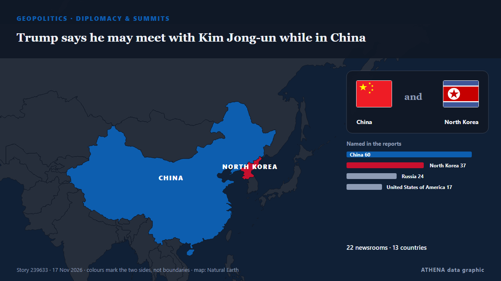

Diplomacy & summits
SponsoredPresented by  Cybernetics and Artificial Intelligence Lab Welcome to the Cybernetics and Artificial Intelligence Laboratory, established at the Department of Business Administration of the National and Kapodistrian University of Athens. The lab is headed by Professor Dimitrios Thomakos. The lab aims to do research that can be published in top venues. Our research uses tools and methods of Artificial Intelligence, and lies in the following areas: - Forecasting - Decision making - Cyber security - Finance We are always looking forward to collaborating with exceptional students!
Cybernetics and Artificial Intelligence Lab Welcome to the Cybernetics and Artificial Intelligence Laboratory, established at the Department of Business Administration of the National and Kapodistrian University of Athens. The lab is headed by Professor Dimitrios Thomakos. The lab aims to do research that can be published in top venues. Our research uses tools and methods of Artificial Intelligence, and lies in the following areas: - Forecasting - Decision making - Cyber security - Finance We are always looking forward to collaborating with exceptional students!
| 4 Nov | 0 |
|---|---|
| 5 Nov | 0 |
| 6 Nov | 0 |
| 7 Nov | 0 |
| 8 Nov | 1 |
| 9 Nov | 0 |
| 10 Nov | 0 |
| 11 Nov | 1 |
| 12 Nov | 2 |
| 13 Nov | 5 |
| 14 Nov | 9 |
| 15 Nov | 3 |
| 16 Nov | 3 |
| 17 Nov | 0 |

Trump says he may meet with Kim Jong-un while in China
WASHINGTON, Nov. 16 (Yonhap) -- In a surprise announcement, U.S. from Yonhap (English)
US and Russia to oppose talks on limiting autonomous weapons
Major military nations argue that existing humanitarian law is enough to govern warfare. from The Straits Times
Four foreign ministers urge Israel to allow ’rapid and unimpeded’ aid into Gaza
The foreign ministers of Australia, Canada, Italy and Britain have urged Israel to “stop the delays” and allow “immediate, rapid and unimpeded humanitarian access throughout Gaza”. from The National
Twelve APEC leaders to attend CEO Summit in Shenzhen
Twelve leaders from Asia-Pacific Economic Cooperation (APEC) member economies will attend the 2026 APEC CEO Summit in Shenzhen, a Chinese trade official said on Sunday. from CGTN (China)
Trump, Xi and Putin eye historic China summit: Why a new Yalta is being discussed
US-China-Russia summit plans remain unsettled, but leaders may meet at the APEC forum in Shenzhen. from Express Tribune
Chinese premier lauds 'extraordinary' ties with ASEAN ahead of Trump visit
In opening remarks to regional leaders during the Association of Southeast Asian Nations summit in Manila, Li said that at a time of growing unilateralism and protectionism and recurring geopolitical… from The Business Standard (Bangladesh) (working feed)
US floated idea swapping Ukrainian territory for NATO membership: Zelensky
Ukrainian President Volodymyr Zelensky said U.S. negotiators floated the possibility of Ukraine surrendering in the eastern Donbas region and conceding it to Russia in exchange for NATO membership. from The Hill
Zelensky says Russia’s energy attacks helped by Starshield restrictions
KYIV: Russia struck energy and railway infrastructure in eight regions of Ukraine overnight, President Volodymyr Zelensky said on Sunday, in attacks he said were made possible partly due to… from Arab News
ASEAN reaffirms engagement with Myanmar, seeks to advance peace plan
Philippine president Ferdinand Marcos Jr said Asean leaders agreed to maintain engagement with Myanmar while adhering to the bloc’s five-point peace plan. from Free Malaysia Today
Trump admin warns air travellers of another messy day
Trump admin warns air travelers of another messy day. from Gulf News
Pakistani Minister To Make Rare India Visit, First Visit Since Op Sindoor
It will be the first trip to India by a Pakistani federal minister since former foreign minister Bilawal Bhutto Zardari attended an SCO meeting in Goa in May 2023. from NDTV
Trump says may hold off on Iran attacks barring new provocations
Trump has told senior advisers in recent days that he may hold off on attacking Iran if the US faces no new provocations from Tehran or Yemen's Houthis. from The New Arab
Trade war in focus at ASEAN summit ahead of Trump’s arrival
The late arrival of US President Donald J. from BusinessWorld
Zelensky: Russia seeks to revise Europe’s security architecture
President Volodymyr Zelensky said that Russia is seeking to revise the security architecture, at least in Europe, and that this is dangerous. from Ukrinform (English)
49th ASEAN Summit kicks off in Philippines
President Ferdinand Marcos Jr. on Thursday appealed for public understanding over disruptions caused by preparations for the 49th ASEAN Summit and Related… from Daily Tribune
Kremlin confirms Putin, Xi Jinping and Trump to hold trilateral meeting in China on November 19
Le Monde columnist Sylvie Kauffmann tries to get inside the minds of the American, Russian and Chinese presidents ahead of a potential meeting of the three world leaders in Shenzhen, China, next week. from Le Monde (English)
EU institutions, E5 to represent Europe in Ukraine peace talks
After coveting a seat in the Ukraine war discussions, Europe is poised to get one. from The New York Times (World)
Trump not expected to raise Alice Huang case with China's Xi
WASHINGTON: US President Donald Trump is not expected to discuss with Chinese President Xi Jinping the case involving a businesswoman whose ties to former Nvidia CEO Jensen Huang raised national… from New Straits Times
Netanyahu Shares Iran Intelligence With Eisenkot Amid Reports of Renewed Attack Plans
JERUSALEM, Nov 14: Israeli caretaker Prime Minister Benjamin Netanyahu has discussed the possible resumption of attacks on Iran with Gadi Eisenkot, who has been tasked with forming... from Arab Times